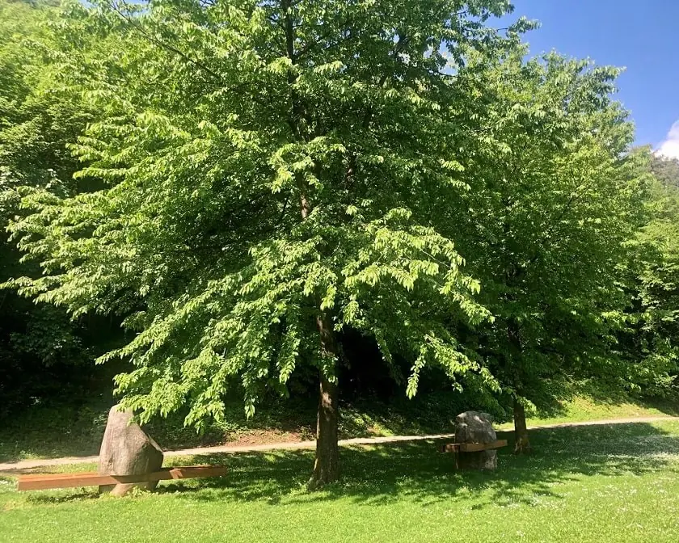

Data Visualization
Eco-benefit project
GROUP
IMPERIALE
MEMBER
MASSIMILIANO IMPERIALE
Project Description
The goal of the project is to build an interactive website tha display some data visualization on the Trento tree dataset
The dataset is available here



The urban forest in Trento contributes to local environmental quality and human health.
But how much eco benefit do they bring? Planting a tree is not enough, you need to take
care of it, wait for the time it begins to "yield" and also know where to plant it.